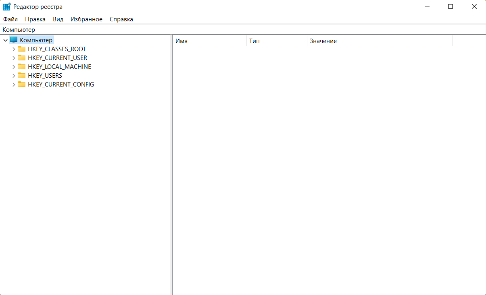

Windows реестр
Реестр Windows, или системный реестр — иерархически построенная база данных параметров и настроек в большинстве операционных систем Microsoft Windows. Реестр содержит информацию и настройки для аппаратного обеспечения, программного обеспечения, профилей пользователей, предустановки.

Основные возможности реестра Windows
- Возможность решить проблему с проблемными устройствами и аппаратной частью компьютера.
- Возможность решать проблемы в работе операционной системы, драйверов, установленных приложений за счет гибкой настройки различных папраметров их работы.
- Позволяет настроить параметры операционной системы Windows и изменять скрытые настройки системы, заданные по умолчанию.
- Настраивать быстродействие компьютера за счет включения/отключения настроек отдельных сервисов и служб.
- Возможность настройки распределения ресурсов между программными продуктами по собственному усмотрению.
- Позволяет оптимально настраивать параметры работы операционной системы в зависимости от требований пользователя или назначения компьютера.